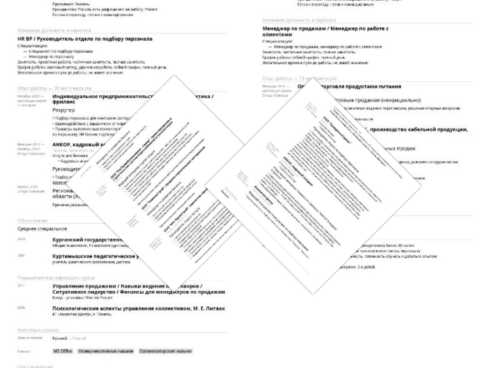

Я Рекрутер: куда идти работать...
Плюсы и минусы работы в штате vs агентстве. Помогу выбрать вектор развития.
Читать далееВсё о подборе для начинающих рекрутеровы
Плюсы и минусы работы в штате vs агентстве. Помогу выбрать вектор развития.
Читать далееПочему рекрутер — лицо компании? Ключевые навыки и правила обратной связи.
Читать далееКак за 2 минуты считать «скрытые сигналы»: ошибки, объём, фото и формулировки.
Читать далееПошаговый чек-лист снятия заявки: история, бюджет, требования и этапы.
Читать далееЧто делать при встречном предложении? Как помочь кандидату принять решение.
Читать далееПочти всю свою профессиональную жизнь я работала со стороны подрядчика и занималась подбором персонала для компаний индустриального сектора.
Коллеги, которые уходили к Заказчикам - в комментариях о новой работе соблюдали нейтралитет. Видимо руководствуясь правилом - о действующем работодателе говорить либо хорошо, либо ничего.
Для тех, кто сейчас на перепутье - расскажу о плюсах и минусах работы со стороны Заказчика и Подрядчика.
Если рекрутер трудоустроил кандидата с ежемесячной зарплатой в 200.000 рублей, то гонорар КА(кадрового агенства) составит 360.000 рублей.
Гонорар самого рекрутера будет зависеть от бонусной шкалы агентства и количества закрытых им в месяц вакансий. Предположу, что при таком гонораре в КА - сам рекрутер получит примерно 20 % от этой суммы, а это 72.000 рублей. А закрыв 2 или 3 позиции - рекрутер приумножит доход в 2-3 раза.
А если это фрилансер-самозанятый - он получит всю сумму минус 6 %.
Я, например, хорошо ориентируюсь не только в горнодобывающих компаниях, с которыми работаю последние 4 года, но и в нефтегазодобывающей и химической отраслях.
Зарекомендовавший себя рекрутер всегда будет при деле. И не важно - фрилансер он или сотрудник кадрового агентства. Именно поэтому важно помнить, что репутация рекрутера, как та самая пресловутая зачётка - после определённого периода времени (опыта) - начинает работать на тебя.
Если Вы как раз решаете, в какую сторону Вам развернуть, а может и начать свою карьеру в качестве рекрутера - оставляйте заявку. Постараюсь ответить на ваши вопросы.
А знаете дорогие работодатели, почему рекрутера надо холить, лелеять и конечно достойно оплачивать его труд?
Потому что никакой бренд работодателя не сработает, если «на входе» в компанию, кандидата встретит вымотанный и побитый жизнью/плохим отношением рекрутер.
Есть такое выражение "Приходят в компанию, а уходят от людей". С рекрутером обратная история: о компании судят по тому, какие люди там работают. А первым их встречает рекрутер.
Поэтому настолько важна его роль - и это не преувеличение.
Попробую обрисовать мой образ идеального рекрутера:
Дорогие юные и опытные рекрутеры, пожалуйста, не оставляйте кандидатов без обратной связи.
Даже если Вам не озвучили причин отказа – кандидату можно сказать:
«К сожалению, коллеги приняли решение в пользу другого кандидата. Спасибо Вам за готовность к сотрудничеству! Удачи Вам в поиске работы!»
Если же у Вас «завал» и Вы точно знаете, что времени отказать всем у Вас точно не будет – сразу предупредите об этом кандидата. Так и скажите:
«У нас большой поток кандидатов. Пожалуйста, перезвоните мне сами через неделю и я поделюсь обратной связью».
Ну вот как-то так) Если вдруг Вы решите спросить меня - соответствует ли моё профессиональное поведение перечисленным выше критериям?
Не всегда, но я к этому стремлюсь!)
Сразу оговорюсь, что оценка человека по резюме - процедура крайне субъективная.
Начнём с того, что возможно соискатель не сам его составлял.
Были такие примеры и до сих пор повсеместно встречаются, когда резюме за кандидата составляет другой человек, например супруга или мама.

И всё же, когда время ограничено, а откликов действительно много - можно делать выводы по следующим признакам:
Но если, например, на вакансию Юриста претендует молодой человек и его фото в резюме крайне неформального вида - я точно позвоню ему в последнюю очередь.
Ну и пример из жизни: как-то моя коллега искала маркетолога и нашла... Это резюме точно выделялось среди остальных - кандидат на фото был без одежды.
Кто не верит - может проверить. Маркетолог был с Дальнего Востока)
Наверное слышали фразу из мультика "Крылья, ноги и хвосты": "лучше день потерять, потом за 5 минут долететь!"
Идея этой фразы отлично ложится и на процесс рекрутмента.
Некачественно снятая заявка - приведёт к тому, что поиск по вакансии затянется на веки вечные) Как минимум, есть опасность, не уложиться в срок.
Даю краткую пошаговую инструкцию - как правильно обсудить запрос:
А вот пример, про неформальные требования, о которых я своевременно не спросила...
Это была 2-я вакансия в моей профессиональной карьере (на заре юности, так сказать:))
Запрос от заказчика: нужен офис-менеджер с опытом в продажах. Что может быть проще? Я ринулась в бой: нашла 4-х идеальных кандидатов - девушек. Но, что-то пошло не так: после каждого собеседования получаю отказ. В итоге, клиент закрывает вакансию своими силами и берёт на эту должность молодого человека. И тут выясняется (заказчик сам мне об этом рассказал, я бы наверное не догадалась): супруга-соучредитель, которая старше его на 20 лет - категорически "забраковывала" всех кандидаток. Причина проста - ревность)
Секрет успеха - в сотрудничестве Рекрутера и Заказчика.
Так и напрашиваются лозунги:
Обе стороны от этого союза только выиграют)
А ещё, хочу добавить: если есть возможность лично встретиться с Заказчиком - не поленитесь, поднимитесь на этаж, пройдите 100 метров, отделяющие Вас от коллеги, посмотрите друг другу в глаза и чудесным образом ваша цель станет общей и станет ближе)
Удачи Вам дорогие рекрутеры!
Простыми словами: Вам сделали предложение о работе, а ваш нынешний работодатель - пытается вас удержать и предлагает лучшие условия. Стоит отметить, что контрофферить может и параллельно рассматривающий кандидата работодатель.
И тут хочу передать привет одной девушке, которая в аналогичной ситуации изрядно попортила всем нервы)
Здесь я не буду рассуждать на тему того, как предотвратить ситуацию отказа кандидата от оффера или как разоблачить контроффериста. Кстати мне чаще встречались контрофферистки)
Поделюсь своим взглядом на этот вопрос:
Ещё 10 лет назад я бы на 200% выложилась, чтобы кандидат принял оффер и вышел на работу.
Но, здесь и сейчас, я считаю, что каждый человек должен сам принять решение, которое может стать для него судьбоносным.
Вопрос не только в заработной плате и уровне должности. Стоит ещё прислушаться к своему душевному состоянию и при этом не перепутать ощущение отторжения от чувства волнения перед сменой жизненного пути.
Конечно, если слышите такие слова как "не знаю", "не могу решится", "нужно подумать", "надо посоветоваться с семьёй", тогда воспринимайте это как сигнал о помощи и помогите кандидату принять решение.
P.S. Дорогие контрофферисты помните - "За двумя зайцами погонишься - ни одного не поймаешь"!